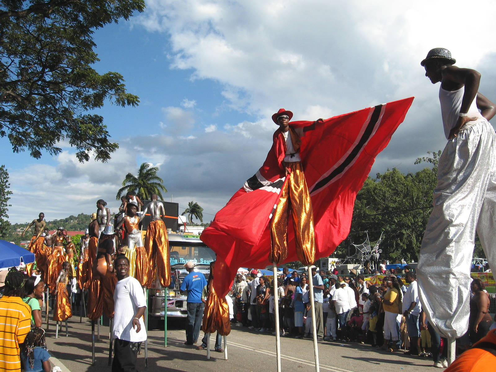
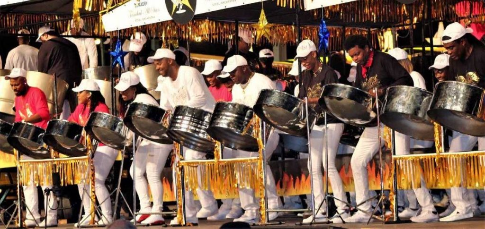
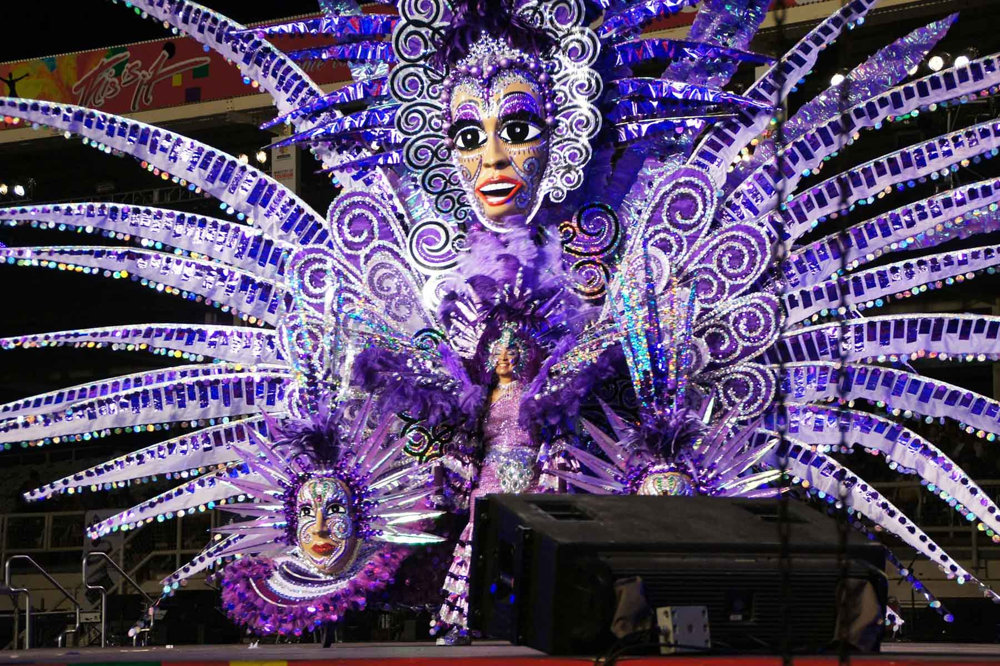

Trinidad and Tobago Carnival – the greatest street parade in the world – originated during the period of slavery when the slaves, banned from attending their masters’ fancy balls and parties, would improvise by staging their own costumed event in their quarters. After Emancipation, these former slaves challenged the plantation owners to publicly host their own Carnival celebration.
Since then, Carnival has evolved into an inclusive, elaborate billion-dollar revenue earner for Trinidad and Tobago. Like other Roman Catholic countries involved in Carnival, these celebrations take place on the Monday and Tuesday directly before Ash Wednesday, usually marked in February or March. Activities on the two days take the form of street parades by bands of costumed masqueraders.
Citizens and visitors of Trinidad and Tobago personify the freedom of self through that euphoria that emanates whether a costume is worn, music is heard or by simply watching it all
A Carnival band could comprise as many as 3,000 masqueraders. To control this number of people on the streets, organisers would divide the band into sections of 200 to 500 masqueraders. Most Carnival bands are led by a King or Queen, some of whom had competed on Dimanche Gras (Carnival Sunday) in order to win the coveted title of King or Queen of Carnival.
The epicenter for the two-day Parade of the Bands in Trinidad and Tobago is Port of Spain however, similar street parties are held at the sister capital San Fernando and at community level in Mayaro, Chaguanas, Arima and Tobago. It’s generally felt the best place to have a good time is “in town” so this is where many revelers journey in order to take part in the festivities.
Home | Carnival | Beaches | Contact Us
Project 1 — Trinidad & Tobago